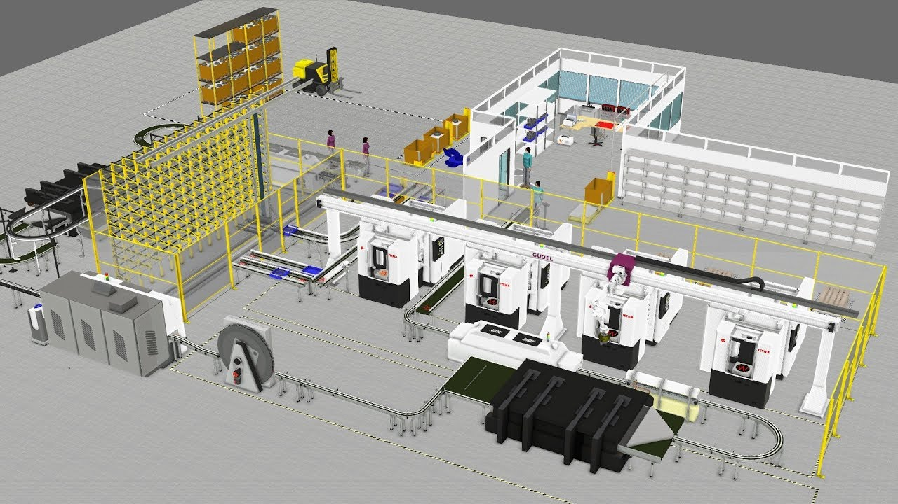

Simulation
Simulation is fundamental in the training of industrial and systems engineers, providing the necessary tools to analyze, model, and optimize complex processes in production and service environments. Through simulation, students develop the ability to dynamically represent real systems, evaluate their performance under various conditions, and make decisions based on virtual scenarios, reducing risks and costs before implementing changes in the real world. In a highly competitive and dynamic business environment, the ability to predict system behavior through simulations enables the design of more efficient operations, improved service quality, and maximized resource utilization.
Learning Objectives
- Understand the fundamentals of discrete event simulation
- Apply simulation techniques with randomness to real-world problems
- Develop skills in data analysis, scenario testing, and optimization
- Master simulation software (FlexSim) to build and analyze simulation models
- Design experiments and perform "what-if" analysis for decision-making
- Model manufacturing, healthcare, and logistics systems with stochastic behavior
- Optimize system parameters using advanced tools like OptQuest
- Validate and verify simulation models for credibility and accuracy
Course Outline
-
Topic 1: Introduction to Simulation
- Fundamental concepts of simulation
- Advantages and disadvantages of simulation
- Types of models: discrete events, continuous, hybrid
- Pseudorandom numbers and their role in simulation
- Continuous and discrete variable generators
- Correlated random variables and stochastic processes
- Techniques to increase model validity and credibility
- FlexSim interface and tools
- Building simple models: queues, production lines
- Configuring random generators in FlexSim
- Analyzing the impact of randomness
- Execution and preliminary analysis of simulations
- Advanced modeling techniques
- Using FlexSim objects and libraries: conveyors, AGVs
- Customization with FlexScript
- Modeling systems with high variability and randomness
- Manufacturing: Production lines with random times
- Healthcare: Patient flow with random variables
- Logistics: Warehouses with random demand and times
- Experimentation and optimization
- Experimental design and "what-if" analysis
- Using FlexSim Experimenter
- Seed control for reproducibility
- Optimization with OptQuest
Topic 2: Simulation with FlexSim
Topic 3: Comprehensive Simulation Applications

GPU acceleration significantly enhances simulation capabilities, enabling the execution of thousands of simulation replications in parallel to achieve statistically robust results in a fraction of the time. Students can leverage GPU-accelerated simulation to explore vast parameter spaces, perform real-time optimization of complex manufacturing systems, and analyze large-scale logistics networks with millions of events. With campus GPU infrastructure, learners can experiment with Monte Carlo simulations at unprecedented scales, implement agent-based models with thousands of autonomous entities, and develop digital twins of production systems that provide instant feedback for decision-making. This computational power enables students to tackle industrial-scale problems that mirror real-world complexity in companies like Amazon, Toyota, and Boeing.
Instructor
Nelson Chávez Oña, Ph.D
Industrial and Biomedical Engineer - Leadership and Systemic Innovation Expert